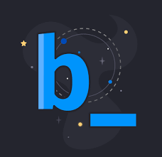

Product Manager · Electronic Health Records · National Integration

At Bridge, I owned the roadmap for a module integrating electronic health records with Brazil's National Health Data Network (RNDS). My core challenge was aligning regional health secretariats — each operating different legacy systems with competing priorities — around a shared data schema. I led discovery sessions with clinicians across multiple states, diagnosed that the majority of manual entry errors traced to a single workflow bottleneck, and drove the fix through a cross-functional team of engineers and compliance officers. I made the call to prioritize HL7/FHIR compliance over a faster custom integration, accepting a longer timeline to avoid technical debt that would have blocked future interoperability.
During the COVID-19 pandemic, fragmented health data systems made coordinated response nearly impossible. Test results, vaccination records, and patient histories lived in disconnected silos across municipal and state systems. The question wasn't whether to integrate — it was how to do it without breaking trust with institutions that had failed at this before.